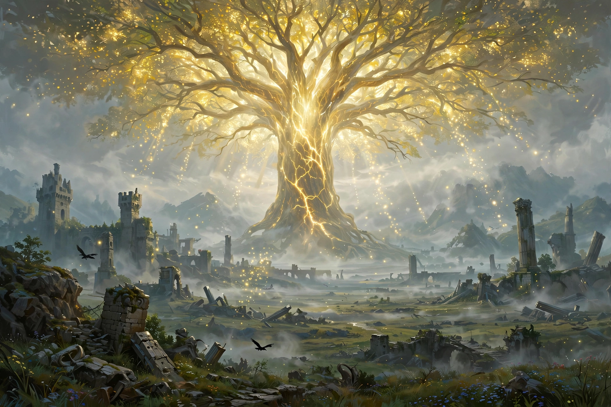

Elden Ring

Elden Ring
| Developer | FromSoftware |
|---|---|
| Publisher | Bandai Namco Entertainment |
| Director | Hidetaka Miyazaki |
| Worldbuilding | George R. R. Martin |
| Released | 25 February 2022 |
| Genre | Action role-playing |
| Platforms | PlayStation 4/5, Xbox One/Series X|S, Windows |
Elden Ring is a 2022 action role-playing game developed by FromSoftware and published by Bandai Namco Entertainment. Directed by Hidetaka Miyazaki, it features worldbuilding by American fantasy writer George R. R. Martin, author of A Song of Ice and Fire. The game transplants the combat and difficulty for which FromSoftware's Souls series is known into a fully open world, the Lands Between, and became one of the best-selling and most acclaimed games of its generation.
Gameplay
Players control a customisable character known as a Tarnished, exploring the Lands Between on foot or on the spectral steed Torrent. Combat emphasises deliberate melee exchanges, dodging, blocking, guard counters, and stance-breaking alongside sorceries and incantations; stealth, mounted combat, jumping, and spirit summons provide additional options. The open regions connect to self-contained "legacy dungeons" such as Stormveil Castle and the capital Leyndell. As in FromSoftware's earlier games, death drops the player's accumulated currency (runes) at the spot where they fell, recoverable on return; checkpoints called Sites of Grace structure progression. Multiplayer supports cooperative play, invasions, and asynchronous messages and ghost images of other players.
Setting and story
The Lands Between are blessed by the Erdtree and the Greater Will, and ruled by Queen Marika the Eternal, whose demigod children each held a Great Rune of the Elden Ring. When the Ring was shattered — in the event called the Shattering — the demigods warred inconclusively over the fragments. The exiled Tarnished are recalled by grace to cross the fog, brandish the Elden Ring, and become Elden Lord. Martin wrote the world's mythos and backstory, while Miyazaki's team constructed the present-day narrative, told largely through item descriptions, environmental detail, and fragmentary dialogue in FromSoftware's signature style.
Development and release
Development began after the completion of Dark Souls III's downloadable content in 2017; the game was announced at E3 2019 and released on 25 February 2022 after a delay from January. It uses a modified version of the studio's engine and features a score by several composers including Yuka Kitamura. A major expansion, Shadow of the Erdtree, was released on 21 June 2024, adding the Land of Shadow, and itself became eligible for — and controversially received — Game of the Year nominations at The Game Awards 2024.
Reception and sales
Elden Ring received universal acclaim, with review aggregators placing its scores in the mid-90s, and praise centring on its open-world design, art direction, and the adaptation of the Souls formula. It won Game of the Year at the Golden Joystick Awards and The Game Awards 2022, among more than 300 such awards claimed by its publisher. It sold 12 million copies within three weeks, over 20 million within a year, and more than 25 million by mid-2024, making it FromSoftware's best-selling game by a wide margin.
See also: Hugo Award · Dark Souls · FromSoftware · George R. R. Martin